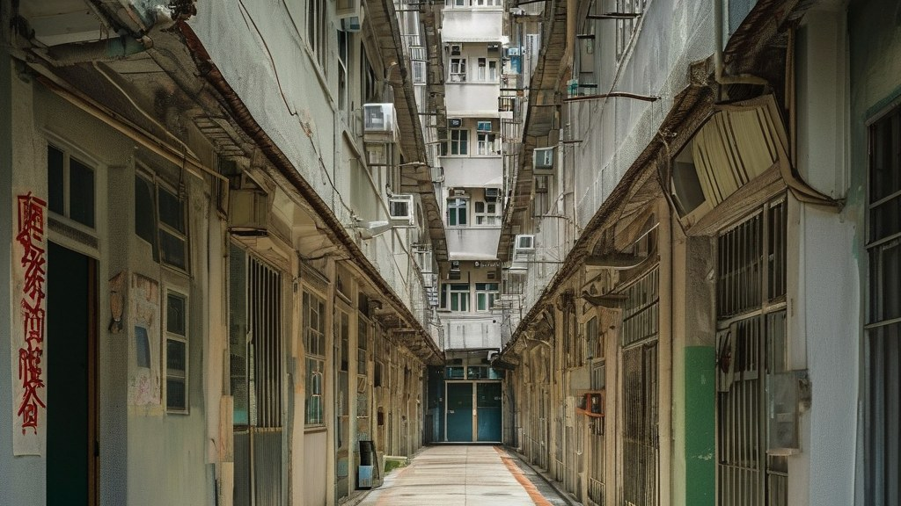
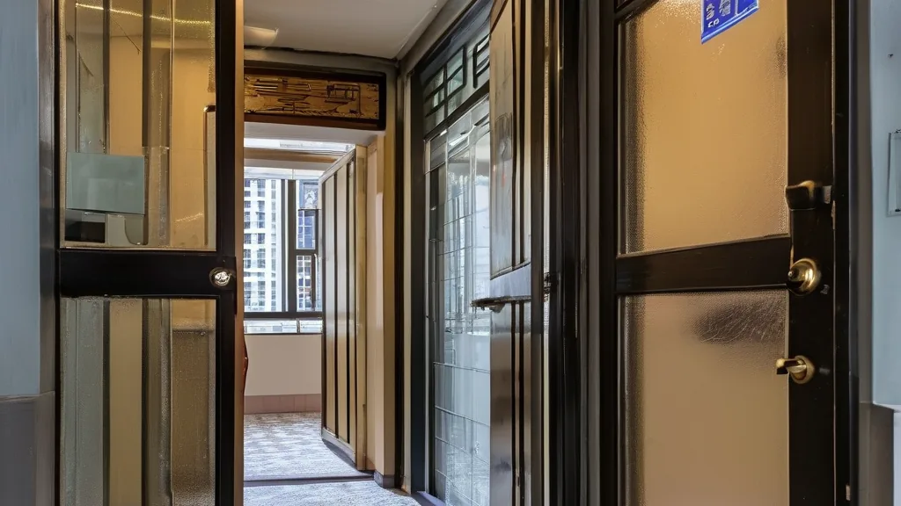
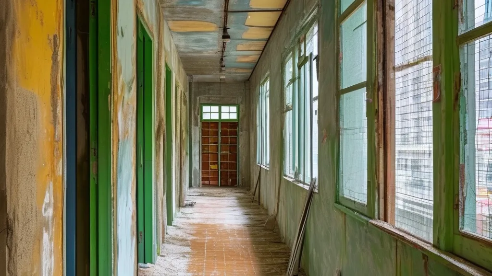
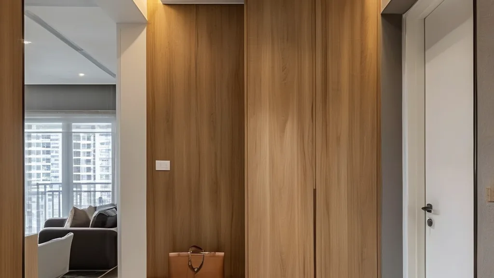

牛頭角390呎拆防火門被叫停：大維修圖則點樣管到你屋企（陳志明）

📍 場景：牛頭角一幢 1985 年落成住宅大廈 390 呎兩房單位｜主訪：陳志明（木工 30 年，土瓜灣）｜記錄：張丹楓｜整理：雲蕾｜日期：2026 年 11 月 26 日｜WhatsApp 報價：852 5190 2328
序幕：四點三十五分，一份講「開工前要交圖則」嘅稿
11 月 24 日下午 4 時 35 分，立法會發展事務委員會開會，發展局局長講《建築物條例》修訂同成立樓宇維修支援及服務局嘅建議。呢份發言稿我睇咗兩次，因為有三句，直接關係到「你幢樓幾時可以開工」。
第一句：政府會將大型樓宇維修工程獨立列為新工程類別，由過去主要靠業界自律，轉為政府主動監察，對違規者嘅罰則亦會加重。
第二句最貼身：工程展開之前，承建商要向屋宇署提交圖則，交代臨時保護措施、會唔會分階段進行，等屋宇署審批，仲要得到消防處准許，然後才可以動工。局長亦老實講，大型維修嘅審批時間預計會比以往長，希望業界想清楚要唔要分期做。
第三句：干犯圍標相關罪行，專業人士或承建商直接除名，唔需要經任何紀律聆訊。
雲蕾喺筆記簿寫低三個詞：圖則、臨時保護、消防處。我望住呢三個詞，即刻想起上個禮拜牛頭角鄭太嗰個單位——因為佢差啲就喺棚架下面，拆走一扇唔應該拆嘅門。
第一幕：一扇門阻住個櫃，業主想「順手」拆咗佢
鄭太個單位 390 呎，兩房，1985 年落成，大廈正做外牆大維修，棚架由地下紮到上頂。佢想整理玄關同走廊，話一入門口嗰扇門「好阻位」，櫃擺唔到，想拆走佢，做一個到頂鞋櫃加儲物。
我到場第一件事，唔係度尺，係望走廊同嗰扇門。門框係實木包鐵皮，門頂有自動關門器，門框四邊有黑色膠條——呢啲特徵，一眼就知係防火門，唔係普通房門。
「呢扇門咁阻位，我拆咗佢擺個櫃，走廊闊返，我間屋我自己嘅，唔係唔得呀？」
我同佢講，門係你嘅，但門後面嗰條走廊唔係你嘅。呢扇門一關，就係把樓梯同你屋企分隔開；拆咗，火同煙就順住走廊直上，你樓上樓下十幾戶一齊承受。
「但係上手業主都話可以拆，我個裝修師傅都話拆咗好睇啲，你哋點解個個講法唔同？」
「因為拆嘅人冇份簽名。將來消防處或者屋宇署上門，簽收文件嘅係你，唔係佢。」
講返今次單新聞，其實就係同一件事嘅放大版：大維修要交圖則、要交代臨時保護措施、要消防處准許，原因係大廈嘅走廊、樓梯、防火分隔，從來唔屬「邊個單位嘅裝修範圍」。你屋企入面點做，係你話事；你屋企外面嗰條命脈，係法定要求。

第二幕：陳志明拆解——防火門、走火通道、臨時保護三件事
我請陳志明上嚟睇。佢做木工 30 年，土瓜灣、紅磡一帶舊樓做得最多，拆過、裝過、亦補救過唔少「拆錯咗」嘅門。佢第一句就講：唔係所有門都叫防火門，但住宅單位對正走廊或者樓梯嘅門，多數有要求。
第一，耐火時效。香港住宅單位大門同走廊門，常見要求係半小時耐火，現場叫 FD30。呢半個鐘唔係為咗救你間屋，係為咗隔住火同煙，等鄰居有時間走。門芯、門框、門鉸、關門器係一整套，換門唔換框、或者拆咗關門器，成道門就唔再係原本嗰道門。
第二，細節數字。陳師傅現場教我睇三個位：門框四邊要裝防火膨脹膠條，遇熱會脹，塞住門框同牆之間嘅縫；門底離地唔好超過 10mm，太大就等於開咗條煙道；門框同牆身之間唔好塞普通發泡膠，一燒就化，要用英泥砂漿或者防火填料收口。
「我見過有人為咗個櫃貼牆，用電鋸鋸薄咗門框一邊。個櫃入咗 50mm，道門就廢咗。」
「咁如果真係要改位，係唔係一定有辦法？」
「有，但要入則同用合規格嘅門，唔係現場鋸一鋸就當改咗。錢係貴啲，但換返嚟係你簽嘅文件有人認。」
第三，走火通道同臨時保護。今次條例修訂其中一項，就係要承建商喺開工前交代臨時保護措施。點解要管到咁細？因為大維修一開工，走廊會擺料、棚架會遮窗、公眾位置會圍板；如果同時你屋企又裝修，兩批人一齊用同一條走廊，最容易出事。
我哋現場嘅做法好簡單：材料上樓即日入屋，走廊唔過夜擺料；走廊牆身釘12mm 夾板做保護，唔用膠紙亂貼；樓梯同防煙門前後一米永遠留空；棚架期窗唔封死，要留通風同逃生路線；天花消防花灑頭唔包、唔遮、唔掛嘢。呢幾條，寫落合約好過寫落口頭。
第三幕：五條規矩、三條底線，同一個 390 呎嘅價錢
鄭太最後冇拆嗰扇門。我哋改咗個做法：鞋櫃深度收到 350mm，門邊留 100mm 開門位，櫃身用 18mm E0 多層實木夾板，門鉸改用 304 不鏽鋼緩衝鉸，走廊唔加任何固定物。櫃細咗少少，但門照關得埋，走廊照通。
「咁我之後想換過扇好啲嘅防火門，係唔係可以順便換埋門框顏色？」
「可以換，但要同尺寸、同耐火級別，而且要有人簽文件。唔好聽人講『油層漆就係新門』。」
「我個櫃薄咗 100mm，啲鞋放唔放得落？你唔好到時又話要加錢。」
「鞋櫃用斜層板，一層放到三對，深度 350mm 夠放成年男裝鞋。加錢嘅位我一定事前寫喺報價單，唔會開工先講。」

對業主，五條：一，凡對正走廊、樓梯嘅門，拆之前先問管理處同查圖則；二，大維修同自己裝修同期，要求雙方書面講清楚走廊同棚架期點安排；三，合約寫明「不得拆改防火門、防煙門及公用設施」，出事有得追；四，開工前後都要影相，特別係原有門框、膠條、關門器；五，收到任何自稱「政府要求」嘅通知，去屋宇署渠道核實，唔好靠一張影印本。
對師傅同裝修公司，三條：一，唔好為咗遷就櫃位而鋸門框、拆關門器；二，報價單分項寫清楚邊項會碰到門、走廊、公用位置；三，遇到上手留低嘅改動，先講風險，再決定做唔做。你可以幫客人美化一個位，但冇能力令一個違規改動變成合規。
呢個 390 呎個案，最後做咗：玄關鞋櫃連換鞋凳、客廳到頂電視櫃、廚房櫃連石英石檯面、主人房到頂趟門衣櫃，另外重做走廊牆身油漆同門框修補。以下係故事報價，只作參考：客廳到頂電視櫃（18mm E0 夾板）$11,000；廚房櫃連石英石檯面 $13,000；主人房到頂趟門衣櫃 $9,500；玄關鞋櫃連換鞋凳 $3,500（走廊牆身修補及油漆已包在內）。加起來 $37,000，一般同類 390 至 420 呎套餐，多數落在 $35,000–$38,000 區間（故事報價，實際以度尺為準）。
想睇同類個案，我之前寫過大埔平台清拆令（post-054）、觀塘大維修棚架期撞室內裝修（post-053），仲有一篇講點睇報價單三個破綻（post-050），可以一齊睇。
尾聲：圖則唔會因為你唔睇而消失
臨走前，鄭太問我一句：「其實你哋做裝修，點解要管咁多外面嘅嘢？」我話，因為一幢樓唔係一間屋疊一間屋。你拆一扇門，隔籬個小朋友放學返屋企嗰條路就少咗一層保護；大維修唔交圖則、臨時保護亂做，全幢人一齊承受。
今次政府要承建商交圖則、等屋宇署同消防處批，聽落好似「程序多咗、慢咗」。但做現場嘅人都知，慢一個星期，好過出事之後查半年。真正貴嘅從來唔係審批，係補救。
陳師傅收工前講多一句：「門可以靚，可以換，可以加顏色，但唔可以唔關得埋。」我覺得呢句比任何一條條文都好記。

記住一句：你可以改自己間屋嘅樣，但唔可以改走人哋條生路。
❓ 大維修與防火門三問
Q1：走廊嗰扇門係唔係一定唔拆得？
對正走廊或樓梯嘅住宅單位門，多數有耐火要求，常見係半小時（FD30）。呢類門連門框、鉸、自動關門器、防火膠條係一整套，拆走或者鋸薄門框，就算睇落仲有扇門，功能上已經唔再合格。真係要改位或者換門，應該先查大廈批准圖則、問管理處，並由合資格人士處理同申報，唔好靠師傅口頭判斷。
Q2：大維修期間，我自己裝修要特別注意咩？
三個位最易撞：走廊擺料、棚架期封窗、公用位置圍板。做法係材料即日入屋、走廊唔過夜擺料；窗要留通風同逃生路線；消防花灑頭唔包唔遮；樓梯同防煙門前後一米唔放雜物。如果大維修承建商同你嘅裝修隊同期施工，最好白紙黑字寫清楚走廊使用、上料時間同保護責任，出事唔會互相推。
Q3：收到自稱「政府要求」嘅維修通知，應該點核實？
唔好靠影印本或者口頭轉述。強制驗樓通知等法定文件，可以透過屋宇署嘅渠道按地址或通知編號查核，亦可以向管理處同法團索取正式文件，核對發出日期、範圍同限期。任何要求你「今晚就要批錢」嘅講法，都應該先停一停、核實咗再講。今次條例修訂亦講明，干犯圍標相關罪行嘅專業人士或承建商會被直接除名，業主投訴有實際後果。
本文配圖均為 AI 場景示意圖，僅供場景參考，並非真實工地照片或業主影像。
想知你個單位裝修要幾錢？
📱 一鍵 WhatsApp 張丹楓